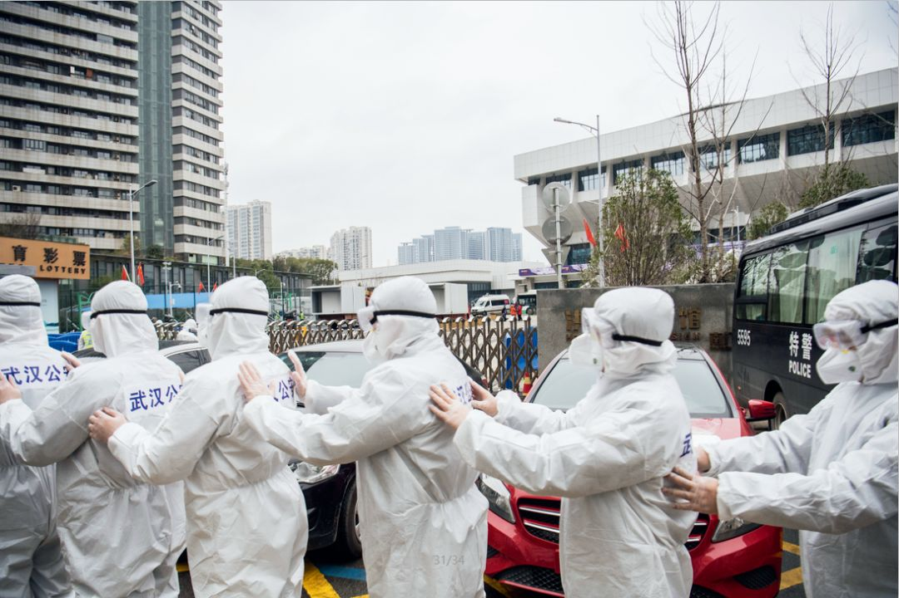
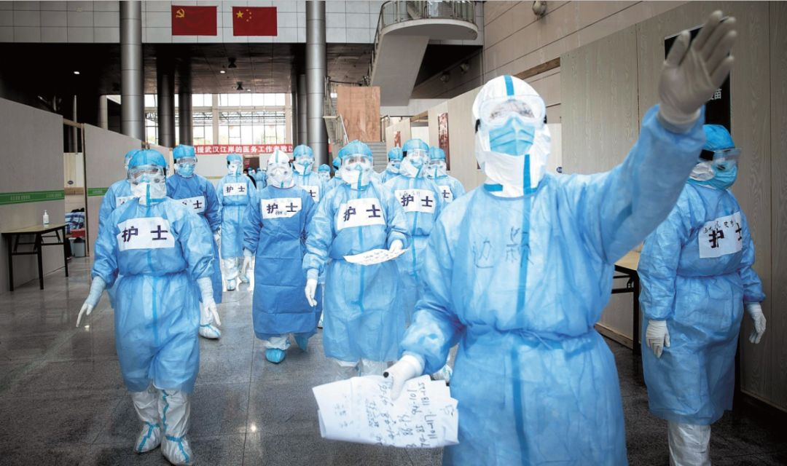
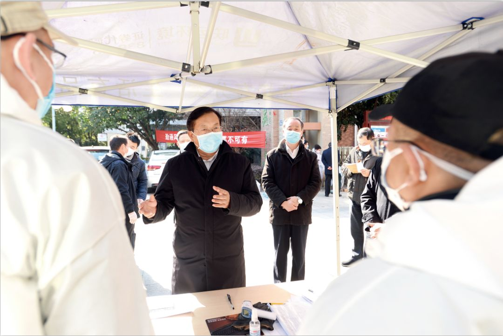
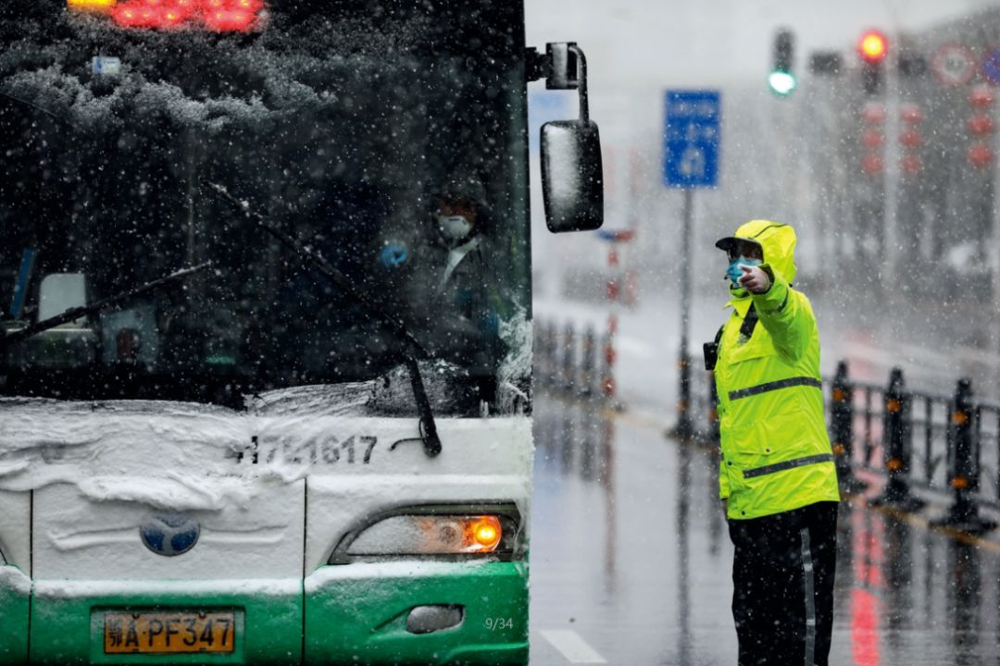

叶青疫区日记：三声惊雷
原文链接 备份链接 点击上方蓝字 _ 关注我们 _ 非常时期，武汉成了全国人民挂念、祈福的城市。封城后，武汉人民的真实生活是什么样？ 正和岛自1月26日起特别推出《叶青：我在武汉疫区的第N天》专栏。叶青是一位定居武汉40年的市民，也是一名 …

对应勇和他的新搭档们而言，他们的大考才刚刚开始

1月20日，在上海市人民政府的记者招待会上，上海市市长应勇在回答记者提问时表示，上海高度重视新型冠状病毒肺炎防控工作，加强了对一些可疑病例的甄别和筛选，对一些可疑病例人员、密切接触的人员也采取了相应的防治措施，一旦发现此类确诊病例，将依法依规及时向社会公布。2月13日，应勇赴湖北任省委书记.摄影/本刊记者 汤彦俊
湖北换帅：抗疫迎来大考
*本刊记者/周群峰 徐天*
发于2020.2.24总第936期《中国新闻周刊》
湖北是抗击新冠疫情的主战场。2月13日，湖北省政坛发生重要人事调整——省委书记与武汉市委书记双双迎来新面孔。
当天，湖北召开全省领导干部会议，中央组织部副部长吴玉良出席会议，并宣布中央决定：应勇同志任湖北省委委员、常委、书记；王忠林同志任湖北省委委员、常委和武汉市委书记。
此前，湖北省委书记、武汉市委书记分别由蒋超良和马国强担任。对于这次人事调整，坊间用一个形象的说法来描述——“走马换蒋”。
履新湖北前，应勇任上海市委副书记、市长；王忠林为山东省委常委、济南市委书记。同日对一省及其省会城市党委一把手进行调整的做法非常罕见。
吴玉良称，这次调整是中央从大局出发，根据疫情防控工作需要和湖北省领导班子实际，经过通盘考虑、慎重研究决定的。
随着应勇的赴鄂履新，湖北正式进入“应勇时间”。
上任首日，他就连开了3场会。参加完全省领导干部会议，当天下午他主持召开专题会，研究部署下一阶段防控措施。之后，他又在武汉市召开的领导干部大会上发表讲话，并强调“希望大家以实际行动支持王忠林的工作”。
履职后，应勇在多个公开场合表示：“疫情防控是一场大考，也是一场大战，狭路相逢勇者胜！”“省委书记这个职务是沉甸甸的责任和千钧重担，对我也是个重大的考验。”
当下，湖北疫情仍然异常严峻，复杂多变。对应勇和他的新搭档们而言，他们的大考才刚刚开始。

2月11日，一队准备进入武昌方舱医院执勤的民警在防护服外粘贴警察标志。摄影/湖北日报 魏铼
“英勇”赴鄂
应勇生于1957年11月，浙江仙居人。公开资料显示，他担任过派出所副所长、镇长、台州行署公安处处长、绍兴市公安局长，浙江省公安厅党委副书记、副厅长，浙江省纪委副书记、省监察厅长等职；2006年，任浙江省高院院长，成为一名省部级干部。一年后，他的仕途转入上海，担任上海市高级人民法院党组书记、院长。2013年4月起，任上海市委常委、组织部长，后又任上海市委副书记。2016年9月，兼任上海市常务副市长，2017年1月任上海市市长。
近几年上海两会后，上海市长应勇都要和中外记者见面回答媒体提问。《环球时报》援引一位外媒记者的印象称，应勇记忆力非常好，对一系列数字熟稔在心。
1月20日晚，上海确认首例输入性新型冠状病毒感染的肺炎确诊病例。
新冠肺炎蔓延到上海后，应勇担任上海新型冠状病毒感染肺炎疫情防控工作领导小组组长。2月1日，他主持召开专家座谈会时提出，只有勇于接受监督的政府才是不懈怠的政府，只有勇于接受批评的政府才是不断进取的政府。
在上海抗疫时，从基层一步步成长起来的应勇，特别重视基层的抗疫工作。他多次和医疗专家、基层代表面对面会谈，听取对防控疫情工作的意见建议，表示要重视基层工作的重要性，切实减轻基层负担，多为基层解决困难。
在一次专题座谈会上，他表示，“请大家直奔主题，谈谈基层开展疫情防控工作遇到什么问题，还有哪些困难，有什么好的经验和建议。”
2月11日，应勇在上海市疾病预防控制中心主持召开专题会，研究新冠肺炎科研攻关和大数据助力精准防控等工作。
两天后，他离沪赴鄂。
应勇说，从踏上荆楚大地的那一刻起，他就成为湖北的一分子，与湖北人民同呼吸、共命运。“我将和全省广大干部群众一起，同心同德、众志成城，坚决打赢疫情防控阻击战，不负党和人民的重托和期望。”
有分析认为，从电视画面看，在上海抗疫时，应勇大部分时候都戴着普通的外科口罩，只有在走进上海市公共卫生临床中心时，会戴上医用防护口罩。履新湖北省委书记后，他佩戴医用防护口罩露面的几率肯定会更多。
与应勇同日履新湖北的王忠林，生于1962年8月，山东费县人，比应勇年轻5岁，毕业于华东政法学院法律系刑法专业。
大学毕业后，他到山东枣庄市公安局工作，与应勇一样，也是一名从基层走出来的干部，也有长期的政法经验。他先从一名普通办事员做起，一步步成为枣庄市公安局党委委员、交警支队支队长，后又任枣庄市人民检察院副检察长、党组成员，枣庄市委常委，聊城市市长，山东省发改委主任，济南市长等职。2018年任山东省委常委、济南市委书记。
1月24日是大年除夕，公开报道显示，从这天开始，王忠林就一直深入在一线抓新冠肺炎防控工作，范围覆盖社区、车站、工厂等区域。
济南多位政商人士告诉《中国新闻周刊》，王忠林非常敬业，在济南他给人留下的印象是，性格直爽开朗，作风硬朗，执行力超强。他调研时经常采取“四不两直”的方式，即不发通知、不打招呼、不听汇报、不用陪同接待，以及直奔基层、直插现场。
一位资深媒体人称，有时王忠林会批评人，甚至批评得还很严厉，但他也只是对事不对人。如果事后他感觉批评得让别人产生过多心理压力，哪怕对方只是一名科员，他也会打电话或者当面给当事人解释一下，让别人放下心理包袱。
公开报道显示，在济南指挥抗疫时，王忠林以“四不两直”方式，先后7次到城市出入口、车站、企业、社区、医院、疾控中心、农贸市场、零售药店、集中隔离点等近30个重点防控地区现场督导，协调解决问题。
2月11日，是王忠林最后一次在济南公开露面，这一天，他戴着口罩，亲身深入小区、药店、留观点，督导疫情防控工作。
两天后，他以武汉市委书记身份亮相湖北。这也是他首次跨省异地交流任职。
应勇履新当天，召开专题会时连说了六个“要点”：要突出重点，抓住当前防控工作的主要矛盾和矛盾的主要方面，及时补齐短板和薄弱环节；要全力以赴抓好阻隔，阻止疫情扩散蔓延，控制源头是关键；要把防控力量下沉社区，全面实施小区适度封闭式管理，强化属地责任、强化小区防控、强化群防群控，看好自己的人、管好自己的门、做好自己的事；要千方百计抓好救治，加大流行病学调查力度，做到深入细致排查全覆盖，把隐性感染者、确诊者的密切接触者、疑似病人和确诊病人找出来，不落一户、不漏一人，应隔尽隔、应收尽收、应治尽治；要不断优化诊疗方案，着力提高收治率治愈率、降低感染率病亡率；要保障医疗物资供应，以强有力的政策充分激活产能，扶持一批龙头企业、骨干企业及若干中小企业扩大产能、转产保供，进一步提高湖北省医护产品供给能力。
上述六个“要点”涵盖了救治、阻隔、物资保障等抗疫三大方面内容。这也被认为是未来湖北抗疫中的主要方向。
当日下午，在武汉市召开领导干部大会上，应勇评价新任武汉市委书记王忠林：他政治素质好，组织领导能力强，基层历练经验丰富，熟悉经济工作和城市管理，处事果断，勇于担当，勤勉务实，为人正派。
应勇和王忠林履新湖北的首日，他们面对的是一组极为严峻的数字：2月13日0时至24时，湖北省新增新冠肺炎病例4823例（含临床诊断病例3095例），全省新增病亡116例（含临床诊断病例8例）。湖北省累计报告新冠肺炎病例51986例（含临床诊断病例15384例），重症7593例、危重症1685例。
“湖北和武汉是打赢疫情防控阻击战的决胜之地，我们必须勇往直前。”应勇称。

2月12日，武汉市江岸塔子湖方舱医院开始收治患者。天津医疗队的医生带领护士们进舱熟悉病房环境。摄影/湖北日报 柯皓
救治：力求做到“床等人”
疫情暴发后，湖北在救治方面压力巨大，无序就医、床位紧张等问题突出。
1月22日，湖北省副省长杨云彦介绍，武汉市为了应对目前发热病人因为无序就医可能带来的交叉感染和疾病传播，实行了发热病人集中就诊的新模式。
该模式也被称为“7+7”模式，即武汉市在城区同济医院、中南医院等7家大型医院附近选择了市汉口医院、市七医院等7家二级公立医院作为发热门诊的定点医院，转移病人、腾空病房全部用于接收发热病人。也就是说，武汉设置了7家定点医院，专门收治发热病人。
从1月23日起，武汉所有发热在37.3℃以上的病人全部到这7家定点医院就诊。同时安排了7家大型医院对口帮扶这7家定点医院，将定点医院除发热病人以外的其他病人接管。
1月25日，中南医院重症隔离病房护士长马晶告诉《中国新闻周刊》，上述模式下，床位仍然非常紧张，危重患者每转出去一个，后面就有三四个排队进来。
此后，集中收治新型冠状病毒肺炎患者的火神山医院、雷神山医院，以及收治确诊轻症患者的方舱医院等相继投入使用。
原北京小汤山“非典”医院院长张雁灵，曾深入武汉疫情一线指导火神山医院和雷神山医院的建设工作。他告诉《中国新闻周刊》，武汉紧急建设的这两所医院有重要作用。这两所医院的规模质量、设计的科学合理性等，都优于小汤山医院。
但是，因疫情形势严峻，床位紧张的问题仍未得到根本性解决。
2月14日，王忠林主持召开市新冠肺炎疫情防控指挥部视频例会。他强调，当前武汉疫情防控形势仍十分严峻。要继续新建方舱医院，千方百计增加床位，配足配齐医护人员和医疗物资，科学优化救治流程，完善援汉医疗队各项服务，努力提高收治率和治愈率，力求做到“床等人”。
2月15日王忠林走进医院、社区、超市等处调研，并看望慰问一线医务工作者。王忠林在当天的武汉市新冠肺炎防控指挥部视频会上强调，在疫情防控工作中，落实要快、执行力要强，“我们每快一秒钟，就给更多的人带来希望。”
他还表示，要力争用3天时间，结合大数据手段，对居家患者进行地毯式、拉网式排查，摸清底数，实现“清底”。
王忠林请各级领导干部换位思考，要把病人当作自己的兄弟姐妹，当作自己的父母亲人，要畅通求助渠道，注重接通率、处理率，一定要让群众的“救命热线”打得通、能有效。
2月15日上午，应勇来到武汉市金银潭医院、武汉客厅方舱医院、火神山医院、同济医院中法生态城院区，了解患者收治情况，看望慰问一线医护人员。这是他接任湖北省委书记后首次调研。
调研过程中，他得知很多医护人员长期超负荷工作时，叮嘱医院负责人：“医护人员是我们宝贵的人力资源，要尽一切可能保护大家的身心健康。”
同日上午，国新办在武汉举行新闻发布会。国家卫健委党组成员、副主任、湖北省委常委王贺胜透露，截至2月14日24时，各地共派出217支医疗队，25633名医疗队员，这还不包括军队派出的医疗队和队员。调集了3个移动的P3实验室，其中在武汉市有181支医疗队，20374名医疗队员，其他城市有36支医疗队，5259名医疗队员。这些都大大超过了2008年汶川特大地震医疗救援的调动规模和速度。中央还安排了19个省份采取“一省包一市”的方式来对口支援湖北省。
王贺胜还透露，目前，已经开放了9个方舱医院，有6960多张床位，在院患者达到5606名。下一步，将根据需要继续腾出医院部分的病房，征用部分场馆，改造为定点医院和方舱医院，确保已排查、确诊的患者和疑似患者都能够得到集中的收治，确保所有没有收治的患者人数清零。
国家卫健委医政医管局副局长焦雅辉表示，以武汉市最早重症定点两家医院为例，金银潭医院和武汉肺科医院，现在患者的出院率已经达到了30％至39％。“这个数字给我们带来了极大的信心。”
焦雅辉还称，方舱医院目前收治的都是确诊的轻症患者，把确诊的轻症患者收治到方舱医院，不会导致交叉感染的风险。
2月16日，湖北省委、省政府发布意见，要求各地加快核酸检测，做到确诊患者收治和疑似患者核酸检测当日清零。
同日，应勇主持召开省防控指挥部指挥长会议，调整省防控指挥部组成人员及职责分工，省防控指挥部下设办公室和综合组、医疗救治与疾控组、物资与市场保障组、宣传组、社会稳定组等5个工作组。
此前的湖北省防控指挥部，下设工作组包括社会捐赠组、物资保障组、交通保障组等。
在就任湖北省委书记当日，应勇就称，要保障医疗物资供应，以强有力的政策充分激活产能，扶持一批龙头企业、骨干企业及若干中小企业扩大产能、转产保供，进一步提高我省医护产品供给能力。

2月18日下午，武汉市委书记王忠林在武汉百步亭怡康苑北区督导检查疫情防控工作，推动落实集中拉网式大排查。摄影/长江日报 周超
阻隔：80多分钟发出三道封控令
救治与阻隔是抗疫的两大关键环节。前者是“治”，后者是“防”。
应勇履新后强调，社区是疫情防控最基础、最基层的单元，只有把小区守住，全社会防控才有更扎实的基础。他称，要全力以赴抓好阻隔，阻止疫情扩散蔓延，控制源头是关键。要把防控力量下沉社区，全面实施小区适度封闭式管理，强化属地责任、强化小区防控、强化群防群控，看好自己的人、管好自己的门、做好自己的事。
近日，湖北多市社区管控措施升级。
2月13日，中央应对新冠肺炎疫情工作领导小组会议明确：孝感、黄冈等地要采取和武汉同等的隔离救治措施。湖北和武汉要进一步强化离汉离鄂通道管控，切实做到内防扩散、外防输出。
同日，黄冈市新冠肺炎疫情防控指挥部发布紧急通告：从即日起，在全市范围全面升级管控措施，所有小区（居民点）一律实行全封闭管理。此外，孝感市大悟县等多地亦实施全封闭管理。
近日，湖北多地还实施“战时管制”。
2月13日，孝感市云梦县新型冠状病毒感染的肺炎防控指挥部发布紧急通告，在云梦城区实施战时管制。通告明确，所有强行冲闯小区、庭院、楼栋、道路出入口设置的隔离、警戒、封控设施的居民，按照战时管理相关规定，一律拘留。
值得注意的是，这两日湖北省已进行了一系列疫情防控举措。目前十堰市张湾区、孝感市大悟县、孝感市云梦县等地均已宣布实施战时管制。
上述几个地区的官方公告称，紧急实施战时管制，依据的是《治安管理处罚法》《传染病防治法》和《突发公共卫生事件应急条例》等相关法律法规。
但中国人民大学公共管理学院公共财政与公共政策研究所教授、公共政策研究院执行副院长毛寿龙告诉《中国新闻周刊》，“战时”这个概念，并不是一个很严谨的词汇。“这是用军事语言表达公共管理，但这不是法律用语。”毛寿龙认为，《传染病防治法》里，并没有这样的说法，“而是指疫情暴发时，政府有权对相关疫情采取管制措施。”
2月15日，武汉，大雪纷飞。这天下午，应勇深入武汉市三个社区，检查社区疫情防控情况，看望慰问社区工作人员和志愿者。
水岸星城社区实行人员进出登记、凡进必测体温，应勇对此给予肯定，向基层社区工作者、志愿者表示敬意和感谢，还叮嘱工作人员通过微信群向居民转达问候。在黄鹂路社区，他详细了解机关干部下沉社区、网格化排查等情况。贺家墩社区东航小区实行严格的封闭管理，同时开辟购菜、外卖、快递临时存放点，居民所需由小区工作人员配送上门，自2月2日后无新增病例。
《湖北日报》报道称，当天应勇与下沉社区的机关干部、社区工作者等交流时勉励他们，“要充分理解群众感受，受得了委屈、经得起埋怨，引导群众‘宅’在家，既是对自己负责，也是对他人负责，对社会负责。”
调研结束后，应勇连夜主持省委常委会（扩大）会议，部署推进全省疫情防控工作。会议提出，要加强分类管理，全力实施拉网式逐人筛查甄别，落实“四类人员”（隐性感染者、确诊者的密切接触者、疑似病人和确诊病人）管理措施，做到应隔尽隔、应收尽收、应检尽检、应治尽治；要全力加强社区管控，实行24小时最严格封闭管理措施。
一些社区干部也感觉到了近日机关干部下沉的力度。
武汉市江汉区唐家墩街道天门墩社区距离华南海鲜市场不足2公里，原先有26名社区工作者。疫情之下，2人辞职，仅剩24人在岗位上，管着30多个小区、8135户居民，其中有不少老旧小区，社区工作人员普遍反映工作量繁重。
2月16日，天门墩社区党支部书记郑青霞告诉《中国新闻周刊》，最近几天里，市一级、区一级相关机关的干部下沉到了她所在的社区，这些干部来自武汉市税务局、长江日报社等单位。“两天里，来了32人报到。另外，还有城管局、交通局安排的40余名工作人员，也陆续进入街道。这批干部多数是科员，到社区后听从社区的安排，值守、做宣传工作，帮着社区打各类电话。”
“小区村庄百分之百实行24小时封闭管理”，是王忠林近期狠抓的一个重点。目标如何实现？他强调，要坚定不移加强源头管控。
王忠林称，“喊空口号，搞形式主义的东西没有用。”他提醒各级干部，“疫情每拖一天，代价都是巨大的”， “疫情防控不好，其他发展改革稳定都是空谈。”
在2月15日上午国新办在湖北武汉举行的新闻发布会上，国家卫生健康委副主任、湖北省委常委王贺胜说，疫情防控到了最关键阶段，湖北武汉仍然是主战场，目前工作已经下沉至社区，确保不出现第二个武汉。
湖北省人民政府网显示，2月16日，分别在15时46分、16时57分 、17时12分，发出三道关于城乡社区、村组封闭管理措施的重磅通知：
《湖北省人民政府关于进一步强化新冠肺炎疫情防控的通告》要求：城乡所有村组、社区、小区、居民点实行24小时最严格的封闭式管理；对所有居民开展拉网式动态滚动筛查，做到“不漏一户、不落一人、不断一天”，确保全覆盖、无盲区。对违反重大突发公共卫生事件I级响应管控措施、妨碍疫情防控工作的，由公安机关依法采取强制措施等。
《关于加强城市社区、小区封闭管理工作的通知》要求，所有小区、楼栋、门栋在保证消防安全的前提下原则上只保留一个出入口，住户无特殊情况一律不准外出，每户每3天派出1名人员外出购买生活必需品。
《关于加强农村村组封闭管理工作的通知》要求，以自然村组（村湾）为单元实施硬隔离，原则上每个村组（村湾）保留一个出入口，安排人员加强值守。非本村组（村湾）人员和车辆一律不准进入，每户每3天可派出一人购买必需生活用品和急需的农业生产资料。对违反重大突发公共卫生事件一级应急响应管理规定的，由司法机关依法采取措施。
当日，应勇又主持召开疫情防控视频调度会并强调，坚决防止疫情从城区向农村蔓延。要清醒地认识湖北和武汉在全国疫情防控大局中的责任和分量。与全国其他省市相比。“我省市州疫情非常严重，除武汉外，确诊病例上千人的还有5个地区。”
湖北省新冠肺炎疫情防控指挥部发布通告，要求省内各类企业不早于2月20日24时前复工。此外，湖北省内大专院校、中小学、中职学校、技工院校、幼儿园延期开学。具体开学时间，将根据疫情防控情况，经科学评估后确定，并提前向社会公布。

2月15日，武汉协和肿瘤医院改为定点医院收治病患，风雪中，医护、交警、公交及相关工作人员正在转运接收新冠肺炎患者。摄影/长江日报 陈卓
“疫情像一面镜子，照出干部的不同状态”
在抗击疫情的同时，湖北官场的沉疴旧疾如何破解，也成为摆在应勇等人面前的一道考题。
应勇肯定了前一阶段湖北的防疫工作。他说，“前一阶段，湖北特别是武汉的广大党员干部，做了大量艰苦工作，付出了巨大努力。”
从实施效果看，无论是此前采取的武汉封城决策、还是修建火神山医院、雷神山医院、方舱医院等，都取得了积极意义。但是多位当地官员的表现也颇受争议。
1月27日，戴着口罩的武汉市长周先旺接受央视采访。他称，“这次疫情，我们既有信息披露不及时的一面，也有我们利用很多有效信息来完善我们的工作不到位的一面。传染病有传染病防治法，必须依法披露，作为地方政府，我获得授权以后才能披露。”
中国社会科学院一名专家告诉《中国新闻周刊》，周先旺所称不经授权，他作为武汉市长不能向社会公布疫情，的确有《中华人民共和国传染病防治法》作为依据。但是， 2007年8月30日第十届全国人民代表大会常务委员会第二十九次会议通过的《中华人民共和国突发事件应对法》中已经规定相关“预警”机制，并赋予当地政府充分的自主权。
“如果武汉市政府在发现这类病例时，就应该知道有发生公共卫生事件的风险，立即依法启动公共卫生事件预警，而不是坐等授权，情况一定不像现在这样。”上述专家说。
《中华人民共和国突发事件应对法》第四十三条规定：可以预警的自然灾害、事故灾难或者公共卫生事件即将发生或者发生的可能性增大时，县级以上地方各级人民政府应当根据有关法律、行政法规和国务院规定的权限和程序，发布相应级别的警报，决定并宣布有关地区进入预警期，同时向上一级人民政府报告，必要时可以越级上报，并向当地驻军和可能受到危害的毗邻或者相关地区的人民政府通报。
该专家称，此前武汉市政府，如果对法律灵活运用，完全可以先预警再上报，及时告知百姓对这种病毒，应该怎么防护。依照该法，哪怕是预警出现了偏差，也不会被追究责任。“武汉市政府在这次疫情中，及时预警是合法的，不预警是错的。”
这位专家认为，武汉市政府最早应该在2019年12月29日前后，就应根据《中华人民共和国突发事件应对法》向社会宣布进入预警期。
之所以得出这个结论，他的依据是12月29日湖北省中西医结合医院开始向省、市、区疾控中心反映情况；湖北省和武汉市卫健委指示武汉市疾控中心、武汉金银潭医院和江汉区疾控中心到湖北省中西医结合医院开始流行病学调查。可以认定，武汉市政府应该在这个时间点前后，已经可以得出“公共卫生事件即将发生或者发生的可能性增大”这一结论。
此前，湖北还有多名官员公开表示“内疚、自责”。
时任武汉市委书记马国强在央视出镜时表示，“这一段时间我是内疚、愧疚、自责的心态。我一直在想，如果我早一点决定，采取像现在严厉的管控措施，结果会比现在要好的，对全国各地的影响会小，也会让党中央、国务院少操心。”
1月30日晚21时，湖北省召开新闻开发布会，时任湖北省委书记蒋超良鞠躬致歉，他称自己心情很沉重，向在这次疫情中失去生命的同胞表示深切的哀悼。“在这次疫情防控工作中，我们确实有一些地方采取了一些措施，虽然出发点是好的，但是工作方式和方法有些简单，我向大家表示歉意。”
蒋超良还表示要“深刻反思在这场地方治理体系和治理能力大考中的不足，认真汲取教训”。
疫情发生后，湖北省多名官员被问责。
1月30日，黄冈市卫健委主任唐志红被免职。此前，中央指导组派出督查组赶赴黄冈市进行督查核查。当问到定点医院收治能力床位数量、核酸检测能力等问题是，唐志红等人被指一问三不知。
2月4日，湖北省纪委监委就湖北省红十字会有关领导和干部失职失责问题进行公开通报。通报显示，免去张钦湖北省红十字会党组成员、专职副会长职务，并给予其党内严重警告、政务记大过处分；给予湖北省红十字会党组成员陈波党内严重警告、政务记大过处分；给予湖北省红十字会党组书记、常务副会长高勤党内警告处分。湖北省红十字会其他责任人员按照干部管理权限由有关党组织依纪依规处理。
通报显示，经调查，湖北省红十字会有关领导和干部在疫情防控期间接收和分配捐赠款物工作中存在不担当不作为。
被免职的前两天，张钦在接受《中国新闻周刊》专访时表示，湖北红会工作中确实有失误，今后还要加强工作（要求）。
2月10日，湖北省委常委会决定：免去张晋的省卫生健康委员会党组书记职务；免去刘英姿的省卫生健康委员会主任职务；上述两职务，由新到任的省委常委王贺胜兼任。
2月14日，王忠林主持召开武汉市新冠肺炎疫情防控指挥部视频例会。值得注意的是，王忠林还把在济南主政时的“四不两直”的经验带到了武汉。
他表示，要严格督导督查，采取“四不两直”方式，严肃查处不担当不作为乱作为问题。要关心关爱一线工作人员，合理安排休息轮转，全力保障医务和防疫人员其他待遇；注重在疫情防控一线考察识别干部。
多个迹象表明，湖北的官场构成，将在抗疫中进一步优化。
2月15日，应勇主持召开省委常委会（扩大）会议，他在会上打了一个形象的比喻：疫情就像一面镜子、一把尺子，能照射出干部的不同状态，衡量出干部的成绩优劣。对干部既要严格要求又要关心爱护，使督查问责和激励关爱两手都硬起来、实起来，在疫情防控的第一线考察干部，努力在疫情防控的大考中交出一份合格的答卷。
次日，他在主持召开疫情防控视频调度会时又强调，要坚决杜绝形式主义、官僚主义，能打仗、打胜仗才是硬道理。“要在火线上考察干部，对表现突出的表彰奖励、大胆使用，对玩忽职守、敷衍塞责的严肃追责问责”。
此次进入湖北的官员中，除了有卫生专业背景的王贺胜，应勇、王忠林以及陈一新（2月8日，中央政法委秘书长陈一新出任中央指导组副组长，当日赶赴武汉）都有长期在政法政法系统工作的履历。
南开大学周恩来政府管理学院教授常健分析，应勇拥有上海这座超大型城市的管理经验，王忠林曾在山东多个地市担任一把手，有丰富的基层治理经验，这有助于湖北省委、武汉市委在今后工作中加强对各层级防控工作的管理协调，优化对具体问题的决策处理；王贺胜则是一位卫生系统专家型官员，又有国家卫健委工作经历，正为湖北省疫情防控注入更多“专业”力量。
中央党校（国家行政学院）党建教研部副主任戴焰军在接受《中国新闻周刊》采访时表示，湖北这次人事调整最重要的一点是，调整来的官员没有思想包袱，能放开手脚干事儿；新领导必定有新思路，他们的到来，能唤起民众期待，消除民众疑虑，振奋人心。从前期工作表现看，说明此前湖北、武汉的领导班子，在打好防疫战的能力方面还需要加强。所以中央从实际出发，抽调更有优势的干部过去肩负领导责任，这对于加强防疫一线的指挥力量和领导力量有意义。
戴焰军表示，在关键岗位用好关键的人，是决定能否取得预期成绩的重要因素。湖北省委书记、武汉市委书记等都是关键岗位，这次调整后的官员中，多人具备丰富的政法工作经验，他们的到来，有助于为抗疫工作注入更多“法治力量”。这也是基于现实考虑。因为在目前的这种特殊时刻，要动员社会各种力量，采取一些封城、封小区等非常规措施来解决问题。
“他们的法治背景，能让他们在具体工作中，既贯彻中央领导精神，创造有利于防控疫情的外部环境，也能在处理各类问题过程中，严格依法办事，确保防疫工作有序推进。”戴焰军说。

值班编辑：罗晓兰
推荐阅读
▼


原文链接 备份链接 点击上方蓝字 _ 关注我们 _ 非常时期，武汉成了全国人民挂念、祈福的城市。封城后，武汉人民的真实生活是什么样？ 正和岛自1月26日起特别推出《叶青：我在武汉疫区的第N天》专栏。叶青是一位定居武汉40年的市民，也是一名 …
原文链接 备份链接 【财新网】（记者 张帆）1月24日中午12点左右，作为疫情爆发中心地的湖北省姗姗启动重大突发公共卫生事件一级响应。而在此之前，从1月23日起，已有浙江、广东、湖南、北京、上海、天津、安徽、重庆、四川等多个省份启动一级 …
原文链接 备份链接 叶青武汉日记：省市同步换帅 8465 来源：正和岛 作者：叶青 02-14 [ …
原文链接 备份链接 *************▲*************2月18日，青山区工人村街道青和居社区第三网格网格员在挨家排查。 （新华社/图） 全文共8426字，阅读大约需要16分钟。 新建或改造医院的速度，远比不上确诊病 …
原文链接 备份链接 我们该从疫情中获取怎样的“抗体”和“免疫力”？1月29日，大年初五，在武汉市汉口解放大道，一位被确诊新冠肺炎的患者正在转院。摄影/长江日报 金思柳 疫情“罗生门”：患者、医者、决策者 《中国慈善家》记者/温如军 吴可 …